Andy Roddick: The New Serving Model?¶
Part 2¶
John Yandell¶
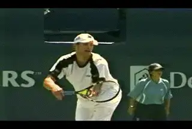
Higher speed and equal spin equals a faster racket.
In a TPA article, Rick Macci made the rather bold assertion that Andy Roddick has more racket head speed than any player in the game. (link) Bold, but also correct. The comparative measurements of ball speed and spin rates show that it's true. If Andy is serving 10mph with the same amount of spin as Pete Sampras, then his racket must be going faster. There is no other way he could generate so much more ball speed combined with the same levels of spin.
Now, I know what some of you gearheads out there are thinking--it's the racket, it's the strings! According to the author of The Physics and Technology of Tennis (and upcoming TPA contributor) Rod Cross, however, that is not likely. (Click here for info on his book.) Remember Pete had a very heavy racket that a lot of people thought accounted for his ball. What really comes down to according to Rod is how fast the racket head is going in 3 dimensions at the contact, especially the forward dimension for ball speed. It may be that Andy can swing that Babolat racket slightly faster because it is lighter (if it really is lighter), but it's the racket head speed, not the racket itself or the strings, that generate the ball speed. The differences in the weights of pro rackets or the type of string and tensions can only account for small increments of speed difference.
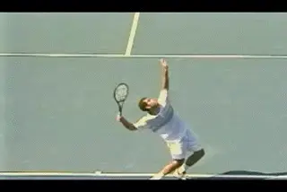
Watch how far Andy's racket travels in about half a second compared to Pete.
By counting the frames in the high speed video, we can look at Andy's racket head speed in relation to Pete's and time how long it takes both players to move through certain key positions. Rick says in his article that Roddick is faster than any other player "in and out of the back." By this he means in and out of the racket drop. The video shows that's correct.
Why? When we look frame by frame it's obvious that Roddick's racket covers a significantly greater distance in the same time interval compared to Pete. If his racket travels farther in the same amount of time, then it must be traveling faster.
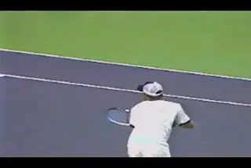
Roddick's unique Power Position: tossing arm extended, racket still to the side.
The animation compares the position of the racket between the two players, starting 70 frames before the contact in the high speed footage. That's a little more than a quarter of a second before the hit. At this point Pete is in the familiar trophy position, sometimes also called the "L Position" or the "Power Position". His tossing arm is fully extended, and his forearm and upper arm are at a 90 degree angle, forming a "L" with the tip of the racket pointing basically straight up. This is a checkmark that biomechanists have identified in a wide range of high performance servers. (link to read Greg Ryan's summary of the current research.)
But Roddick doesn't reach this checkmark position. Look at the difference in the position of his racket at the extension of his tossing arm. Rather than pointing upwards in the standard "L" shape, Roddick's racket is on his right side pointing basically toward the side line. There is also significantly more bend in his elbow. Andy has created a new Power Position. Remember, for both players, this is about 1/4 second before contact. From this position, Roddick's racket has much further to travel.
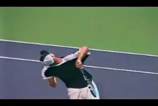
Watch Roddick's "invisible" extra motion, kicking the racket out behind him at an angle.
But that's not the only major difference with Pete. There is a second invisible element in Andy's motion. This is the way his hand and arm move in the last few frames before the contact. Not only is Andy's racket head moving faster, it is actually taking a slightly different path on its way up to the ball, a path that actually appears to add even a little more length in the last fractions before contact.
Roddick reaches the pro racket drop position I've written about before like virtually all top players. (link). The racket is basically on edge in the drop position, falling along the right side of the body, with the shaft pointing down at the court. From here, most players go up to the ball by extending the elbow and rotating the hand arm and racket. The racket starts up to the ball on edge, with the face turning to the ball (from right to left) in the last few frames before contact.
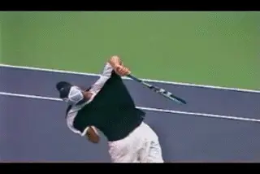
From this outside position, Andy develops additional hand and racket rotation.
Roddick's path isn't that simple. As he starts upward to the ball he actually rotates the racket backward in the opposite direction--away from the ball and to his right. He does this by turning the hand and forearm slightly downward or counter clockwise. Technically this is called "supination." Turning the hand kicks the tip of his racket out behind him to his right. Watch how the angle between the torso and the racket changes. Instead of staying on edge, the shaft of the racket is at a noticeable angle to the torso, probably around 20 degrees or so.
This move happens so fast, that it is barely visible, even in the high speed footage. It takes about 2/100s of a second--that's only about 4 frames in the high speed footage! I'd looked at dozens of his serves in regular video without ever noticing it. No wonder no one has spotted it with the naked eye!
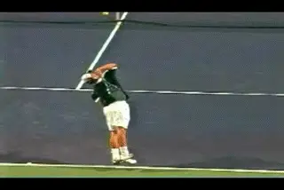
Andy's racket approaching the ball from the right.
Once he has rotated his racket out to the right, Roddick immediately rotates it back the other way as he starts to square up the racket face to the ball. From this position, the racket is coming to the ball noticeably from the right. In some servers you see a slight hint of this tendency, but never as extreme as what Roddick is doing. (At least in the players I've filmed.)
What's the benefit? We know from our study of biomechanics that the internal forward rotation of the hand and arm is a source of racket head speed in the service motion. By turning his racket away at an angle, Roddick is increasing the amount of this internal rotation as he comes back to the ball. Again, only a quantitative measurement could confirm this for certain, but it seems more than likely that this extra rotation would contribute additional racket head speed. This rotational move is the "jewel" my friend the junior coach picked up from the high speed footage and showed with great results to his college player.
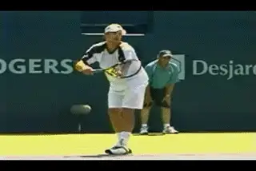
Andy starts by going out to his right and then up
So now we have two different sources of evidence that point to the same conclusion. We know Roddick is hitting the ball faster than Sampras with the same spin. We can also look at Andy's motion and actually see technical differences that could account for the additional racket head speed. What I want to know, though, is how Rick Macci was so sure of this without seeing any high speed video.
The Mystery Wind Up
A lot of time and energy has been spent speculating on the meaning of Roddick's super quick, abbreviated windup. I also see a lot of juniors trying to copy it, usually with disastrous results. There is no doubt that it makes the whole motion much, much quicker as we have seen by counting video frames. But not everyone has Andy's superfast, twitchy rhythm. In fact I'd say it's the opposite. The vast majority of players can't copy it no matter how much they want to or how hard they try.
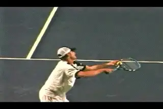
As the hands separate, Andy pulls his elbow back into the Power Position.
I've filmed quite a few juniors trying to imitate the abbreviated windup. I haven't seen one yet that really looked like Roddick. Typically they jerk the racket backward and upward at the start of the motion. But then they end up waving it around in the air for a half second or so, waiting for the rest of their body to catch up. They never make the new power position Andy has developed, and the rhythm of their serves is effectively destroyed.
So what is really going on with that windup? How does it relate to his unique motion upward to the ball and the extra racket head speed? Let's start by just looking and trying to describe what happens.
Watch Andy's hand, arm, and racket in the animation. As the windup begins, he doesn't drop the racket and hands like virtually all other top servers. Instead he starts by taking the hands and racket slightly out to his right. Then, keeping both hands together, he starts the upward motion. The hands start to separate, and as this happens, he starts to pull his elbow back. This continues until his elbow is basically in line with the shoulders, or maybe pulled back a little further (look at the line of the stripe on his shirt across the top of his shoulders.)
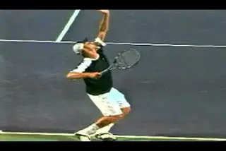
The hand, arm and racket rotate together.
This is Roddick's power position, coinciding with the maximum extension of his tossing arm. My friend Marc Moran, the tennis director at the gorgeous Spanish Bay Club in Monterey, California, says it's like an archer pulling back a bow. At this point, Andy's forearm is almost parallel to the court, pointing at the sideline at a slight angle. The racket tip is pointing slightly forward and up. The angle of the bend at his elbow between his forearm and upper arm is probably about 70 degrees.
From this power position, Andy takes the hand, arm and racket upward as a unit. He does this by rotating his upper arm in the shoulder joint. Nothing else moves independently--they just all come along for the ride. This movement takes the racket upward until it now points at the sky.
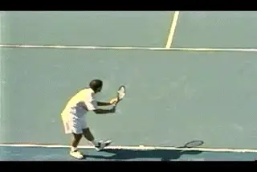
Pete's racket drops, his arm straightens, then he goes upward.
This is a radically different backswing move compared to the other top servers. Although the backswings vary, virtually all players drop the hands and racket downward to start the wind up. Next they move the hand and racket backwards behind the body, at least to some extent. As they do this, the arm straightens out, and the tip of the racket points downward and/or to the player's right. From this point, the racket comes forward and upward toward the traditional checkmark position, ending with the elbow bent at a right angle and the racket tip pointing upward as we have seen.
Andy eliminates all that. Since his arm never drops or moves out behind his body, his arm never straightens out. It just stays bent at the elbow at the same angle as in his power position. If we look at the angle of his racket tip we can see that it now tilts forward at an angle. From this position, Andy begins the backward rotation of the hand and arm. The result is the extra suppination we have already indentified.
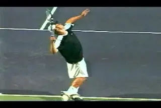
With his racket tilted forward, Roddick can rotate his hand back behind him naturally and efficiently.
If a player with a more traditional windup tried to do this, he would have to bring the hand forward from the "L" position, bending the elbow more to get the same angle with the racket tip that Andy achieves with the abbreviated windup. Then he would have to reverse directions and rotate the hand backwards. Try it yourself from both positions. You'll fee that it is natural from Andy's. On the other hand, it feels quite awkward with a traditional windup. You feel that you have to change direction in the middle of the motion and that you are losing momentum and possibly decelerating the racket head.
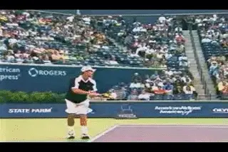
So it's all interlated: wind up, power position, suppination.
So for Andy, it's all interrelated. We all know the story of how he felt frustrated and changed his motion one day because he thought he could serve harder with a lower toss and a simpler motion. He didn't think it through technically, we can be sure of that. But technical advances don't come from thinking. They come from the instincts and intuition of players. The abbreviated windup and the new power position allowed him to move through the motion faster and rotate his hand and racket backwards and naturally increase the forward rotation in the motion. Whatever Andy was feeling, the high speed video shows that there was something to it that contributed to the new world serving speed record.
From Different to Similar
So we have spent a lot of time going over the video and seeing the differences in Andy's motion and how they may contribute to his racket speed. Now let's look at the moment of truth--the contact point. What we see may surprise you.
If we look at the still images of Andy's contact point and compare them to Pete, they look surprisingly similar. In fact, with a couple of exceptions (see below) you'd be hard pressed to tell any major differences.
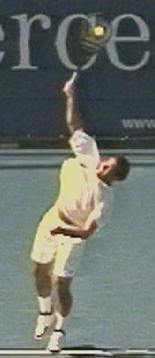
Andy and Pete in the Deuce court (left) and the Ad court (right). How they get there couldn't be more different, but the contact points are surprisingly similar.
Look at the ball on the left to right axis. We can see that both players are making contact at very close to the same position. This is further to his left than we might suspect for Roddick, somewhat to the left of a line drawn up from the hitting shoulder. Note also the angle of the racket, tilted about 20 degrees to the player's left. This is an indication that there is a topspin component in the delivery as the racket face is crossing the ball at an angle. The body position is somewhat closed to the baseline, probably around 30 degrees for both players
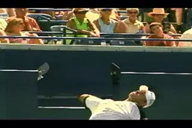
Unlike Sampras, Roddick's head turns forward with his torso.
There is one pretty obvious difference, though, the head position. Andy has already turned his head to his left so that it is facing across the court. It's more or less aligned with his torso. This is similar to the head position of another big server, Greg Rusedski, although Rusedski turns his head frontwards a little sooner than Andy. I've heard it argued by Rusedski's former coach that you shouldn't try to keep your head up and that is more natural and biomechanically efficient to turn with the motion.
Pete's head on the other hand is facing much more to his right at contact, similar to Roger Federer. It appears that with the head turned to the right both Sampras and Federer can watch the ball longer. But the funny thing is, if you look at the animation of Roddick, it appears he may actually still be able to watch the ball out of the corner of his eyes at contact. It's hard to tell, but in the close up he still seems to be looking back at the contact.
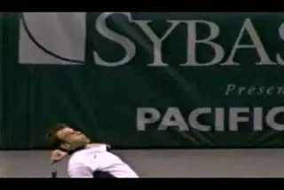
Rusedksi: is the head turn biomechanically superior?
Does turning the head impact Andy's motion in any negative way? That would be hard to argue, given his results. On the other hand, a few years ago, I found that looking at high speed footage of Taylor Dent that he almost always turned his head sooner when he missed his first serve. I had the chance to work with him and his father Phil (a pretty good server in his own day) to try to correct that using Sampras and Philippoussis as models. It may not affect Andy or might even be a positive in some way we don't understand, but it's hard to imagine trying to teach a player to turn his head away from the ball intentionally.
Another visible difference with Sampras at contact is that Andy is higher in the air over the court. That's consistent with what we saw about his leg drive. We can also assume that this is a significant contributor to his overall racket speed.
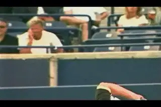
Andy's racket path may indicate he is generating more slice.
If we look at the path of the racket after the contact, we can see another difference. It appears that Andy's racket is traveling a little more from his left to his right across the ball on most of his deliveries. This may indicate that he has a higher slice component than Pete in terms of the overall spin. When we look more closely at the high speed spin data, we hope to answer that question. Andy definitely has more speed, and the same amount of spin, but what about the type of spin? How much of the total rotation is sidespin and how much is topspin? Is there a significant difference there? This is part of the work we are pursuing in our ongoing study of the heavy ball, so stay tuned to see what we find out.
Let's look at a final factor, which is the positioning and movement of his left arm. In Andy's tossing motion, when he extends his left arm he brings it much further back than other players. With Sampras or Federer when the tossing arm is fully extended, it still points slightly forward at an angle. Andy's points the other way. His arm is somewhat curved rather than straight, and the arc of his arm is pointing back behind him. As the motion unfolds, the movement of his left arm is also different. It comes down much sooner, and ends up swinging much further behind his body than any other player. He has a characteristic landing position, with the left arm stretched and pointing out behind him and slightly to the side. No one else I've filmed has such extreme left arm motion in both directions, up for the toss and then back and behind him for the landing.
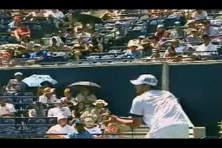
Andy's left arm goes up further and then comes back behind him.
What's the role of this unique motion, if any? It's possible that it accentuates the "shoulder over shoulder" rotation that Bruce Elliott has identified in his articles as one characteristic of the power serve. (link.) But the question I have is whether it affects his balance and recovery. Although he occasionally lands closer in to the baseline with his torso upright, in general Andy lands about 2 feet inside the court and bent over substantially at the waist. Federer, for example, lands standing almost perfectly straight up and down from the waist. The landing seems to make Andy's recovery to the ready position more involved, because he has to stand up straight as he moves back and split steps. This may be a liability, but the extreme left arm motion may also contributing to the overall explosiveness of the shot.
Teaching Andy's Serve
As we said at the outset, Andy's motion has been widely misunderstood. Unfortunately, in some cases this extends to coaches who are trying to teach the elements in his motion. Recently I read an article on Roddick's serve on another site that argued that Andy toss travels straight up and down so that if he were to let the ball drop, it would land in front of his front foot. But that's not what the video shows on Andy's toss--or the toss of any other top player.
[In reality, all good servers turn the tossing arm to the side across their body in the windup. This is important in creating body rotation. The left arm points toward the sideline at an angle somewhere between 45 and 90 degrees. From this position, the arm goes down and then back up. But as it comes up to the release, it's still pointing to the side--not forward in front of the body.]
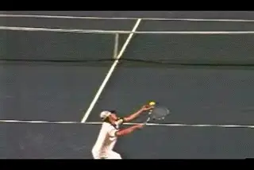
Watch the path of Andy's toss from right to left.
Just as with the tossing motion itself, the flight of the toss is not straight up and down. At the release, the ball travels on an arc from the player's right to left. If Andy were to let his toss drop without hitting it, it would land on his left side. It's the same for Pete or Federer, though more extreme for those two due to their increased body turns.
The idea that the tossing motion and the toss move straight up and down in front of the body is a common misunderstanding in teaching--I know because I made the same mistake in the first edition of my book! I like to think if I had the video resources then that we have now, I wouldn't have made that mistake. But the funny thing was, if you looked at the video that went with this article you could clearly see Roddick's tossing arm point to his right, and the arc of the toss back to his left. So the author was arguing for something that was the opposite of what his own supporting video actually showed.
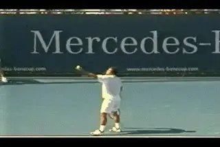
Sampras's ball toss--see where it starts, and where it ends.
Not every player--or even most players--are going to have a contact point as far back to their left as Pete or Roddick. This right to left arc will be less extreme in most cases. But contacting the ball too far to the right is one of the most widespread problems in recreational tennis. It lowers the contact point and makes it literally impossible to develop topspin. I recently worked with a pro player in the top 50 in doubles who had exactly this problem, stemming from his belief that the tossing arm and the ball should both go straight up and down.
There was another significant problem with the other article on Roddick's serve that had to do with one of my favorite topics--the so-called "snap" of the wrist. (To see the "Myth of the Wrist" link.) The author had video of students learning the forward wrist snap. He was teaching them the "wave bye bye" motion, in which the wrist flips forward and the tip of the racket ends up pointing down at the court at a right angle. According to the article that was critical to Roddick's serve.
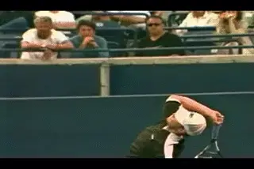
The arm and racket rotate, and the wrist comes along for the ride.
But again that didn't match the video of what Roddick was doing. Because of his extreme pronation, Roddick's racket face at the same point in the motion was on edge, with the face turned outward to the sideline. It never faces directly down at the court. None of the students, sadly, had a hint of pronation.
If we look closely at Andy's hand and wrist around the contact, we can see the typical pro pattern for wrist movement on the serve. At the racket drop the wrist is laid back at an angle to the forearm. This starts to change as the racket starts moving up to the ball. The hand comes in line with the racket just before the hit, as the arm straightens out and the racket head rotates into the ball. This basic alignment stays the same well into the pronation movement. You can basically draw a straight line from the shoulder out to the tip of the racket. There is no "wave bye bye."
The angle between the hand and the arm definitely changes as the racket head goes up to the ball. Doesn't this show the wrist is snapping? The answer is no. If the wrist is relaxed, the movement is actually a consequence of, or a reaction to, the forces created by the swing upward to the ball. It's not a conscious muscle contraction.
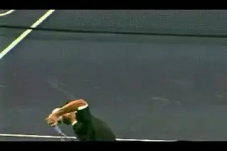
The wrist squares the racket but never snaps forward.
Don't just take my word for it, here is what Rod Cross the noted Australian physicist wrote to me when I asked his opinion on the topic: "The wrist is not rotating the racquet. It's the other way around. The wrist should relax before impact since the force generated by the rotation of the forearm provides a much bigger torque than the wrist can possibly provide." (We'll have more on the role of the wrist in a groundbreaking future article on the biomechanics of the serve from Dr. Brian Gordon.)
If there really was a significant forward wrist snap, you'd see the angle between the racket, hand and arm continue forward at contact in the high speed video. You'd see at least a hint of the "wave bye bye." But you never do. The forearm muscles aren't snapping the wrist forward, they are rotating the forearm, hand, and the racket head as part of the pronation.
Sometimes you will see the hand flex to the right a few frames after the hit. Again this isn't a "snap." It couldn't be affecting the contact, because it happens after the ball has left the strings. It's a reaction to the forces of the motion--and usually an indication of more sidespin in that particular delivery. You see this more often with Andy than with Pete, which supports the hypothesis that his serve may have a relatively higher sidespin component. Any forward bend of the wrist that you see happens in the followthrough, long after contact, if at all.
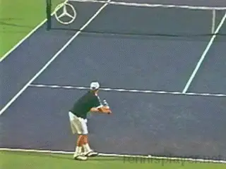
The study of high speed video will eventually bringing coach beliefs closer to reality.
As we move forward in the video age, I think we will gradually see the teaching paradigms come closer to matching what the players are actually doing. The problem is however, that coaches sometimes use the video to substantiate what they already believe, instead of looking at it with fresh eyes and adapting their teaching to what they actually see. The coach who wrote the article on Andy's serve is knowledgeable and has contributed to our understanding of the sport in other areas, and I respect his efforts. He may eventually reexamine his beliefs if he ever takes the time to look at the high speed video of the serve that is now available.
We still have a long way to go, but as more and more players and coaches who grew up with video and computer analysis become influential in developing players, I think we will see an inevitable change, and teaching language will get closer to describing the reality of the invisible game.
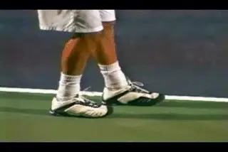
The stance and leg drive is something that most players can try.
So Is He a Model?
The title of the article asks the question. Is Andy the new model? So is he? How much can the average player and/or advanced competitive players really learn from Andy's serve? I think the answer is mixed at best. But until we really went inside his motion, there was no way to answer the question. If you don't know what Roddick is actually doing, how could you possibly use him as a model--or evaluate if you wanted to? I think we can say certain things for sure. His motion probably isn't dangerous. It may look different, and it happens faster, but it also quite fluid and relaxed.
But can it be copied? Probably the least controversial element would be his stance and the leg drive. I didn't think it was really possible to push that strongly with both feet, but Roddick proved me wrong. (That's the value of trying to keep an open mind when you study the high speed video--you might learn something new.) Yes, with Andy's stance, you may give up body turn, but then the extreme turn of players like Pete or Federer or John McEnroe is difficult to execute and has to be considered an advanced technique anyway. So maybe his stance is worth experimenting with--although I'm not sure about picking up the back foot and moving it back. Probably the best way to try that would be the find a comfortable width at the start of the motion and stay with it. Our contributing editor Scott Murphy has had great results doing this.
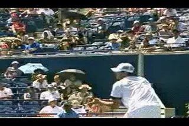
Can the average player actually copy the wind up and extra hand rotation?
The wind up and the extra hand and arm rotation are more problematic. My friend the California junior coach believed that his college level student could incorporate it. Eventually we could see other top players who do the same thing. At the recreational level, though it's much harder. Try it for yourself--that windup is a bitch. It feels very, very different. Personally I was never able to get the positions right. And I felt completely awkward trying to rotate the hand backwards when the racket came up. That doesn't mean that some 10 year old kid looking at the video in this article isn't going to make the motion his own and hit the first 160mph serve.
But one suggestion, if you do want to try it. Go to the racket drop position first. Now turn your hand down a little and kick that racket out behind you to the right like Andy. Try tossing and hitting some balls from there. See if you can actually feel the extra action and if you think you are adding speed. If you can honestly say yes, then it may be worth trying to learn the windup that delivers the racket there in the course of the full motion!
Will there be a significant shift in the way to players serve based on Roddick's motion? Well, Rafael Nadal for one appears to have a similar windup, but I'm not sure his delivery is a ringing endorsement. There's another player I look forward to filming in high speed video. But that's another story. Only time will tell about Andy's influence on the long term evolution of serving technique. As always I'll be interested in hearing your thoughts about this article and whether you agree, disagree, found it informative, or whatever else, so let me know.

John Yandell is widely acknowledged as one of the leading videographers and students of the modern game of professional tennis. His high speed filming for Advanced Tennis and TPA have provided new visual resources that have changed the way the game is studied and understood by both players and coaches. He has done personal video analysis for hundreds of high level competitive players, including Justine Henin-Hardenne, Taylor Dent and John McEnroe, among others.
In addition to his role as Editor of TPA he is the author of the critically acclaimed book Visual Tennis. The John Yandell Tennis School is located in San Francisco, California.